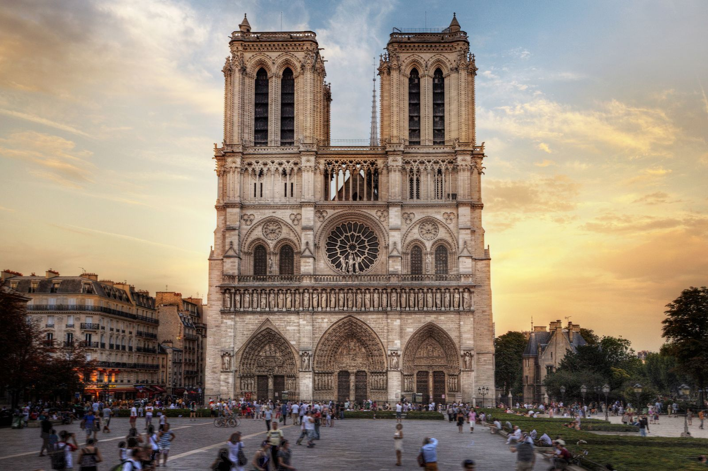
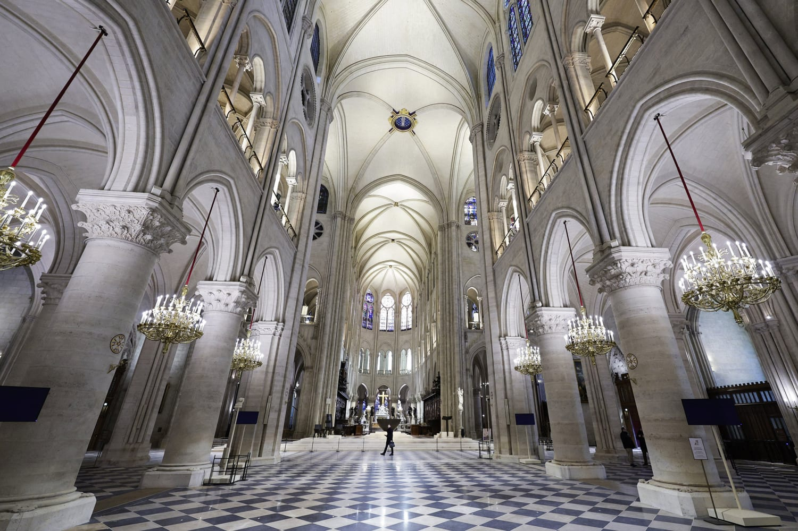
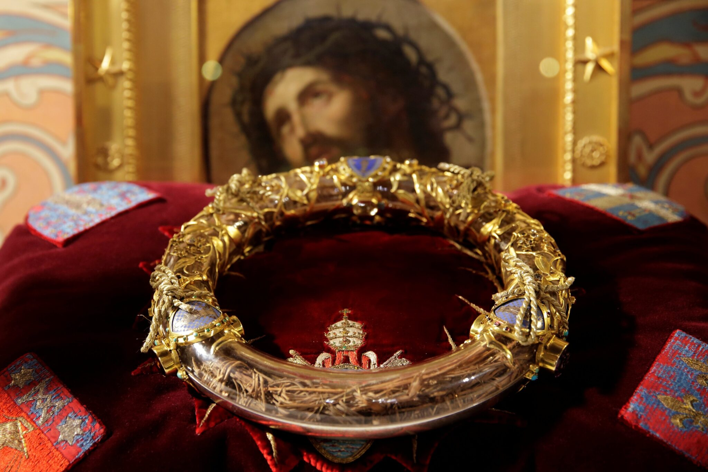

This restaurant on the Seine is a unique dining experience inspired by the popular tourist activity of going on river cruises to see Paris' landmarks. The globally inspired plates are complemented by the romance of dining on the water. In this tour, you can see the Passerelle Simone-De-Beauvoir, a beautiful pedestrian bridge designed by the Eiffel Company. It was named after the French writer and philosopher of the same name, and is the first bridge in Paris to be named after a woman.
France
Welcome to the France cultural tour. Here you will find immersive experiences of globally iconic landmarks as well as local culture.
3D Tour: Le Bateau Phare
Photo Gallery: Notre Dame Cathedral




The Notre-Dame is a cathedral in Paris dating back to the 12th century. It is considered a masterpiece of Gothic architecture and is a global icon, known for its towers and gargoyles. It was the setting of several historical royal events such as the coronations of Henry VI and Napoleon I, and is the home of relics like the Crown of Thorns, which has been there since 1806.
3D Tour: Les Jardins Éphémères
Located in the city of Nancy, UNESCO World Heritage site Place Stanislas turns into the themed green space known as Les Jardins Éphémères every September. This tour displays the square as it was in 2020, when the theme was “Earth or desert?“ and focused on juxtaposing the arid and dry with the fertile and humid.
Video: Paris Walking Tour
This video by HP Walking Tours shares a captioned walking tour of the city of Paris, passing through many iconic locations such as the Notre-Dame de Paris, the Louvre, and the Eiffel Tower.